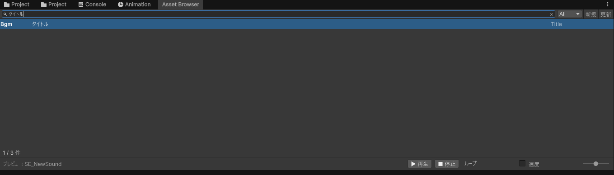

Asset Browser は D-Drive の入口になるウィンドウです。登録済みの素材（アセット）を一覧で見たり、検索したり、新しく登録したりできます。
Tools をクリック → D-Drive → Asset Browser をクリック
| 場所 | 説明 |
|---|---|
| 検索欄（左上） | 文字を入れると、その場で一覧が絞り込まれます。日本語の表示名でも検索できます（例:「斬撃」と入れると「剣の斬撃音」がヒット）。カテゴリ・タグ・説明文も検索対象です。 |
| 種別メニュー（検索欄の右） | 「All」のままなら全部表示。「Se」を選ぶと効果音だけ、「Bgm」を選ぶと BGM だけに絞れます。 |
| 「新規」ボタン | 新しいアセットを登録するダイアログを開きます（下で説明）。 |
| 「更新」ボタン | 一覧を最新の状態に読み直します。（普段は自動で更新されるので、表示がおかしいと感じた時だけ押せばOK） |
| 一覧 | 登録済みのアセットが並びます。クリックすると右の Inspector に詳細が表示され、ダブルクリックすると Project ウィンドウの実ファイルがハイライトされます。 |
| プレビューバー（一番下） | 選択中の音をその場で試聴できます。▶再生 / ■停止 / ループ / 速度。 |
検索欄は1文字打つたびにその場で絞り込まれます（Enter キーを押す必要はありません）。
入力した文字は、そのアセットの以下の項目のうちどれか1つにでも含まれていればヒットします（大文字・小文字は区別しません）。
| 項目 | 説明 |
|---|---|
| 表示名 | 「剣の斬撃音」のような、人が入力した名前 |
| ファイル名・保存場所 | ツールが自動生成したファイル名(例: SE_Player_SwordSlash)や、保存されているフォルダのパス |
| カテゴリ | 登録時に入力した分類 |
| 説明文 | Inspector の「Description」に書いた内容 |
| 作成者 | Inspector の「Author」に入力した名前 |
| タグ | Inspector の「Tags」に登録した各キーワード |
種別メニュー（All/Se/Bgm/…）を絞った状態で検索すると、「その種別に該当する」かつ「検索文字にヒットする」ものだけが表示されます。両方の条件を同時に満たす必要があります。
ファイルを後から設定したい場合はこちら。開くダイアログは同じです。
| 項目 | 入力するもの | 例 |
|---|---|---|
| 種別 | 作りたいアセットの種類。効果音なら「Se」、BGM なら「Bgm」。 | Se (SeData) |
| 表示名 | 日本語でOK。一覧や検索で使われる名前。後から変えても大丈夫。 | 剣の斬撃音 |
| カテゴリ | 整理用の分類。空欄でもOK。 | Player |
| 識別子 | 英語で、先頭大文字・スペースなし。プログラマーがコードから呼ぶときの名前になります。迷ったら英単語をつなげて各単語の頭を大文字に。 | SwordSlash |
SE_Player_SwordSlash というファイルが Assets/GameData/Audio/SE/Player/ フォルダに自動で作られ、管理台帳への登録もすべてツールがやります。ダイアログの下に「生成先」がプレビュー表示されるので確認できます。Player、Enemy/Attack のように / で階層も可）、カテゴリごとのフォルダに自動で仕分けられるので、Project ウィンドウから直接探すときも見つけやすくなります。
Tools → D-Drive → Generate → GameData をカテゴリ配置に整理 を実行すると、ツールが正しいフォルダへ移動して名前も直してくれます（移動してもゲーム側の参照は壊れない仕組みになっています）。
sword_slash / 剣斬撃 / 1Slash → OK: SwordSlash
もっと細かく確認したい場合（波形を見る・3D の聞こえ方を確かめる等）は Audio Editor を使います。